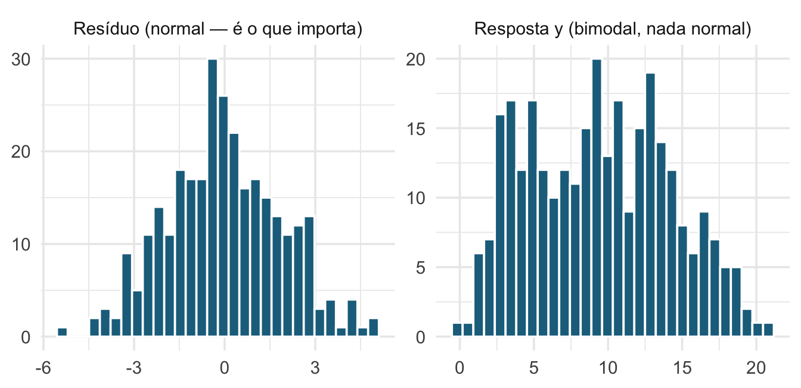
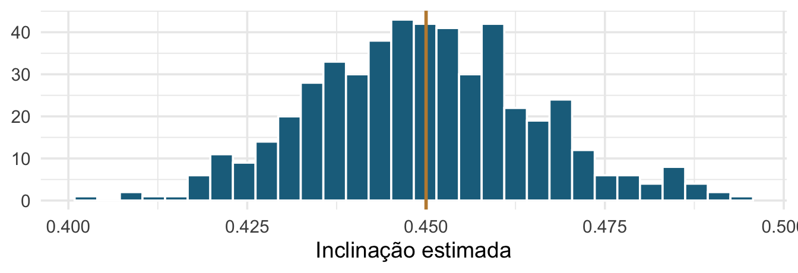
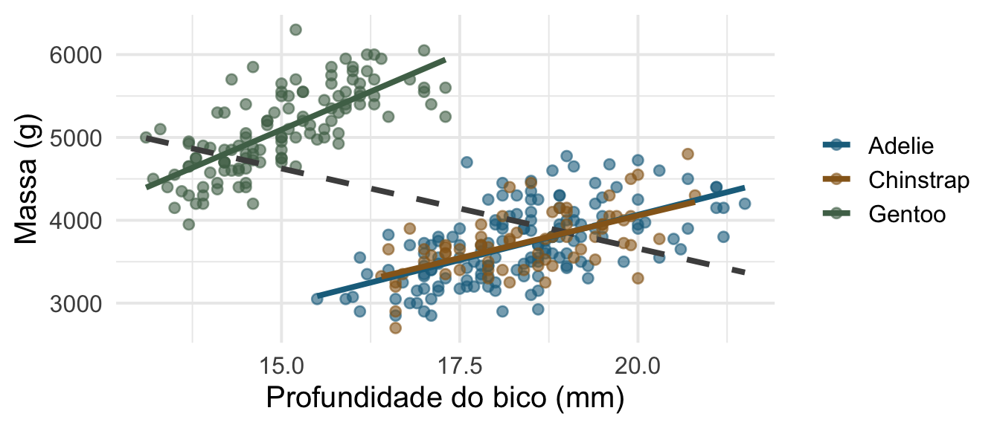
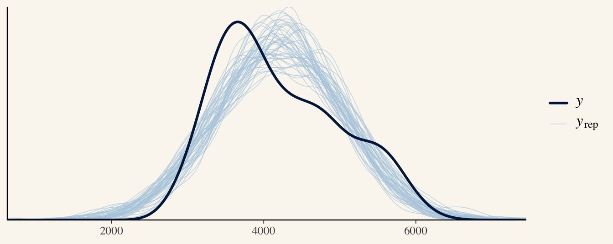
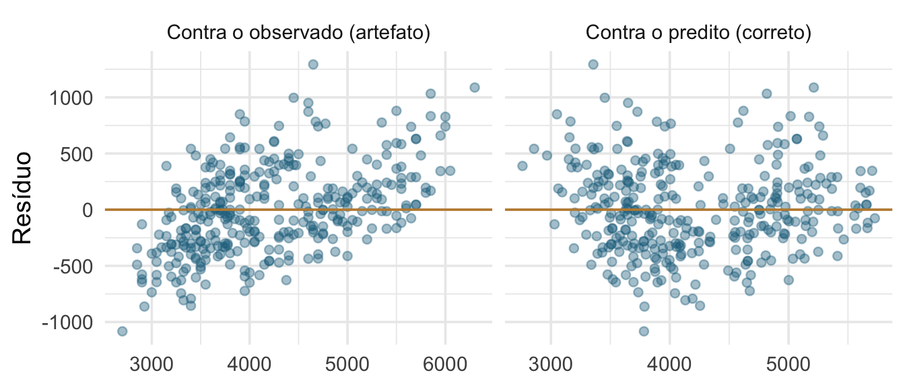

Encontro 2 · Análise de Dados Univariados · PPGBA/UFMS
21 de setembro de 2026
O modelo é a etapa Análise do ciclo. Mas repare: a matriz de delineamento que vamos escrever hoje é decidida na etapa Plano — pela forma como os dados foram coletados.
Teste t, ANOVA, ANCOVA, correlação e regressão não são cinco procedimentos. São um modelo, com matrizes de delineamento diferentes.
Se isso for verdade, três coisas mudam:
Três fontes sustentam os Encontros 2 e 3:
Quinn & Keough (2023), cap. 4 — o arcabouço: as “técnicas” de nome próprio como variantes de um mesmo modelo.
Gelman, Hill & Vehtari (2020), Regression and Other Stories — a postura: regressão é uma ferramenta de comparação e predição, não uma máquina de produzir valores de p. Simular, ajustar, prever, checar.
Lindeløv, Common statistical tests are linear models — a demonstração: a tabela que mostra cada teste clássico como um lm() com uma matriz de delineamento específica.
O ROS ajusta quase tudo com stan_glm(). Neste curso usamos lm() e glm() como padrão — que é o que vocês vão encontrar na literatura e nos laboratórios — e, quando mostramos a versão bayesiana, usamos brms, cuja sintaxe é idêntica à do lme4 e do glmmTMB que veremos nos Encontros 7 e 8. Uma notação só para o curso inteiro.
lm(): a matriz de delineamento escrita à mãocontr.treatment e contr.sumbrms\[ y_i = \beta_0 + \beta_1 x_i + \varepsilon_i, \qquad \varepsilon_i \sim \mathcal{N}(0, \sigma^2) \]
Ou, em forma matricial, para o modelo inteiro de uma vez:
\[ \mathbf{y} = \mathbf{X}\boldsymbol{\beta} + \boldsymbol{\varepsilon} \]
\(\mathbf{X}\) é a matriz de delineamento. É ela — e só ela — que muda entre um teste t e uma regressão.

O modelo linear não assume que y é normal. Assume que o resíduo é. Testar normalidade da variável resposta e decidir a análise a partir disso é um erro comum e caro.
Em amostras razoáveis, violar (4) modestamente é quase inofensivo. Violar (2) invalida tudo.
E a ordem não é opinião. As premissas 2 e 3 são as condições do teorema de Gauss–Markov — que pede até menos, só resíduos não correlacionados —, e delas vem a garantia de que os mínimos quadrados têm a menor variância entre os estimadores lineares não enviesados. A normalidade não está entre elas: não serve para estimar, e sim para a inferência, porque dela saem as distribuições t e F.
O ROS lista seis, em ordem decrescente de importância, e as duas primeiras não são sobre resíduo nenhum:
Da 3 à 6 são as quatro do slide anterior, na mesma ordem: aditividade e linearidade, independência dos erros, variância igual, normalidade.
Nenhum gráfico de resíduo detecta (1) e (2). Elas se decidem na pergunta e no delineamento — é o Encontro 1 — e são as únicas da lista que análise nenhuma conserta depois.
Gelman, Hill & Vehtari (2020), Regression and Other Stories, seção 11.1.
A regra que o ROS tira da premissa 2, e que decide muita coisa:
Selecionar em \(x\) não atrapalha a inferência do modelo. Selecionar em \(y\), sim.
O exemplo deles é uma regressão de renda contra altura e sexo: ter mulheres e pessoas altas em excesso na amostra é tolerável; ter ricos em excesso, não.
Traduzindo. Amostrar de propósito mais sítios de mata do que de campo não quebra nada — desde que “mata × campo” esteja no modelo. Agora, jogar fora os sítios em que você não encontrou nenhum anfíbio é seleção em \(y\), e isso quebra.
É também um argumento a favor de incluir mais preditoras: quanto mais do processo de seleção estiver em \(X\), mais defensável fica a representatividade condicional. E o descarte de zeros volta no Encontro 6, do outro lado — como origem de inflação de zeros.
Sobre a premissa 6, eles vão além do que dissemos no bloco anterior:
“we do not recommend diagnostics of the normality of regression residuals”
Não é que o gráfico Q-Q esteja errado — ele é relevante quando o objetivo é prever observações individuais. É que, para estimar a reta, a normalidade quase não pesa, e a atenção está mal alocada.
Compare com o Kozak & Piepho (2018) e o Shatz (2024), nas leituras: eles argumentam que a premissa se checa no resíduo e por gráfico, não por teste. O ROS assina embaixo e acrescenta que, para esta premissa específica, nem o gráfico merece muito do seu tempo. As três posições concordam no que importa: o valor de p de um teste de normalidade não decide nada.
Gelman, Hill & Vehtari (2020), Regression and Other Stories, seção 11.1.
| Matemática | Tradução para língua humana |
|---|---|
| \(y = X\beta + \varepsilon\) | a relação entre \(y\) e \(X\) é linear |
| \(X\) é \(n \times k\) e tem posto completo | nenhuma coluna de \(X\) é combinação das outras |
| \(E(\varepsilon\varepsilon' \mid X) = \sigma^2 I\) | variância igual e sem autocorrelação |
| \(\varepsilon \mid X \sim N(0, \sigma^2 I)\) | resíduo normal, média zero — isto é para a inferência |
A terceira linha é a que faz o trabalho pesado, e é a única que quase nunca é escrita por extenso. Vale abrir.
A premissa de independência e homocedasticidade são duas afirmações sobre a mesma matriz:
\[ \operatorname{var}[\varepsilon_i \mid X] = \sigma^2 \quad \text{para todo } i \qquad\qquad \operatorname{cov}[\varepsilon_i, \varepsilon_j \mid X] = 0 \quad \text{para } i \neq j \]
Empilhando as duas, a matriz de variância-covariância dos resíduos fica:
\[ E(\varepsilon\varepsilon' \mid X) = \begin{bmatrix} \sigma^2 & 0 & \cdots & 0 \\ 0 & \sigma^2 & \cdots & 0 \\ \vdots & \vdots & \ddots & \vdots \\ 0 & 0 & \cdots & \sigma^2 \end{bmatrix} = \sigma^2 I \]
Saber o resíduo de uma unidade amostral não diz nada sobre o resíduo de outra: é isso que os zeros fora da diagonal afirmam. E o mesmo \(\sigma^2\) repetido na diagonal é a homocedasticidade.
\[ \underbrace{\sigma^2\begin{bmatrix}1&0&0&0\\0&1&0&0\\0&0&1&0\\0&0&0&1\end{bmatrix}}_{\text{OLS}} \qquad \underbrace{\begin{bmatrix}\sigma_1^2&0&0&0\\0&\sigma_2^2&0&0\\0&0&\sigma_3^2&0\\0&0&0&\sigma_4^2\end{bmatrix}}_{\text{variância desigual}} \qquad \underbrace{\sigma^2\begin{bmatrix}1&\rho&0&0\\\rho&1&0&0\\0&0&1&\rho\\0&0&\rho&1\end{bmatrix}}_{\text{dois grupos}} \]
Heterocedasticidade mexe na diagonal: cada unidade tem a sua variância. Dependência — praias, espaço, tempo, filogenia — preenche o que está fora da diagonal.
O curso inteiro cabe nessa frase: trocar o \(I\) por outra coisa. O modelo misto do Encontro 7 escreve os blocos a partir do delineamento; o glmmTMB com propto() põe ali a matriz da filogenia; o GLS com estrutura de correlação põe a do espaço ou a do tempo.
Antes de ajustar um modelo a dados reais, simule dados em que você sabe a resposta e confira se o modelo a recupera.
Se o modelo não recupera parâmetros que você mesmo escolheu, o problema não está nos dados — está no seu entendimento do modelo.
(Intercept) comprimento
4.3298505 0.4173157 O ajuste devolve algo próximo de 3 e de 0,45. Nós sabemos que está certo porque nós escrevemos a verdade.
simula_uma <- function(i) {
x <- runif(120, 20, 60)
y <- 3 + 0.45 * x + rnorm(120, 0, 2)
coef(lm(y ~ x))[2]
}
inclinacoes <- purrr::map_dbl(1:500, simula_uma)
ggplot(tibble(inclinacoes), aes(inclinacoes)) +
geom_histogram(bins = 30, fill = "#1c6e8c", colour = "white") +
geom_vline(xintercept = 0.45, colour = "#96661f", linewidth = 1) +
labs(x = "Inclinação estimada", y = NULL)
A linha dourada é a verdade. O espalhamento é o erro-padrão — não uma fórmula decorada, mas uma quantidade que você pode ver.
Vamos usar este mesmo truque no Encontro 4 (distribuições), no 6 (excesso de zeros) e no 7 (efeitos aleatórios).
lm()Machos e fêmeas de Pygoscelis adeliae diferem no comprimento do bico?
Two Sample t-test
data: bill_length_mm by sex
t = -8.7765, df = 144, p-value = 4.44e-15
alternative hypothesis: true difference in means between group female and group male is not equal to 0
95 percent confidence interval:
-3.838435 -2.427319
sample estimates:
mean in group female mean in group male
37.25753 40.39041 Estimate Std. Error t value Pr(>|t|)
(Intercept) 37.257534 0.2524088 147.60791 4.653163e-159
sexmale 3.132877 0.3569599 8.77655 4.440460e-15Comparem: a estimativa de sexmale é exatamente a diferença entre as médias; o valor de t e o valor de p são os mesmos do t.test(). Não é coincidência — é o mesmo cálculo.
(Intercept) sexmale
1 1 1
2 1 0
3 1 0
4 1 0
5 1 1
6 1 0
7 1 1
8 1 0Uma coluna de 1 (o intercepto) e uma coluna 0/1 que marca male.
Para uma fêmea, a linha é \((1, 0)\):
\[\hat{y} = \beta_0 \cdot 1 + \beta_1 \cdot 0 = \beta_0\]
Para um macho, \((1, 1)\):
\[\hat{y} = \beta_0 + \beta_1\]
\(\beta_0\) = média das fêmeas. \(\beta_1\) = diferença macho − fêmea. O “teste t” é o teste de que \(\beta_1 = 0\).
| Teste clássico | O mesmo modelo |
|---|---|
| teste t de uma amostra | lm(y ~ 1) |
| teste t de duas amostras | lm(y ~ grupo) |
| teste t pareado | lm(diferença ~ 1) |
| ANOVA de um fator | lm(y ~ fator) |
| ANOVA de dois fatores | lm(y ~ a * b) |
| ANCOVA | lm(y ~ fator + x) |
| correlação de Pearson | lm(y ~ x) padronizado |
| regressão múltipla | lm(y ~ x1 + x2 + ...) |
Detalhamento em Lindeløv, Common statistical tests are linear models.
[1] 0.5894511[1] 0.3474526[1] 0.3474526\(R^2\) da regressão simples é o quadrado da correlação.
| Correlação | Regressão | |
|---|---|---|
| Simetria | \(r_{xy} = r_{yx}\) | \(y \sim x \neq x \sim y\) |
| Unidade | adimensional | unidade de \(y\) por unidade de \(x\) |
| Predição | não | sim |
| Papel das variáveis | simétrico | resposta e preditora |
Se a sua pergunta tem uma direção — “o que a temperatura faz com a massa?” —, você quer regressão. Correlação é para quando as duas variáveis têm o mesmo estatuto.
[1] 0.5894511[1] 0.5764804Diferença grande entre as duas é sinal de não linearidade ou de outlier influente — vale olhar o gráfico antes de escolher.
15 minutos.
Na volta: interpretar coeficientes — comparação, não efeito.
A cada 1 mm a mais de bico, a massa esperada aumenta 86.8 g.
Repare que a interpretação só existe com unidade. Coeficiente sem unidade é número solto.
O que o lm() está fazendo por baixo é o assunto do cap. 8 do ROS, Fitting regression models: a seção 8.1 põe mínimos quadrados, máxima verossimilhança e inferência bayesiana como três respostas à mesma pergunta, a 8.2 mostra quanto cada ponto puxa a reta, e a 8.4 ajusta o mesmo modelo com lm() e com stan_glm() lado a lado.
389 g é a massa esperada de um pinguim com bico de 0 mm — que não existe.
(Intercept) bico_c
4207.05706 86.79176 Centrando a preditora, o intercepto passa a ser a massa esperada de um pinguim de bico médio. A inclinação não muda.
(Intercept) bill_length_mm flipper_length_mm
-5836.30 4.96 48.89 Cada coeficiente é o efeito daquela preditora mantendo as demais constantes. Note que o efeito do bico caiu bastante em relação ao modelo simples — porque bico e nadadeira medem, em parte, a mesma coisa.
Em dados observacionais, um coeficiente é uma comparação entre unidades que diferem naquela variável — não o que aconteceria se você mudasse a variável numa mesma unidade.
| Escreva | Não escreva |
|---|---|
| “pinguins que têm 1 mm a mais de bico pesam, em média, X g a mais” | “aumentar o bico em 1 mm aumenta a massa em X g” |
| “sítios 1 km mais distantes do parque têm, em média, Y atropelamentos a menos” | “afastar o sítio do parque reduz a mortalidade em Y” |
A linguagem causal exige um argumento causal — delineamento experimental ou um DAG defensável (Encontro 5). O modelo, sozinho, não fornece esse argumento.

Ignorando a espécie (linha tracejada), a relação é negativa. Dentro de cada espécie, é positiva. A estrutura do modelo decide o sinal do resultado.
contr.treatment (Intercept) speciesChinstrap speciesGentoo
3706.16438 26.92385 1386.27259 Adelie é o nível de referência (primeiro em ordem alfabética). Os coeficientes são diferenças em relação a ele; o intercepto é a média de Adelie.
contr.sum(Intercept) species1 species2
4177.2299 -471.0655 -444.1416 [1] 4177.23Agora o intercepto é a média das médias de grupo, e os coeficientes são desvios em relação a ela.
O ajuste é idêntico — mesmos valores preditos, mesmo \(R^2\), mesmos resíduos. O que muda é o significado de cada número na tabela.
Duas consequências práticas:
contr.treatment é o efeito no nível de referência do outro fator — não o efeito médio; (Intercept) species2Adelie species2Chinstrap
5092.437 -1386.273 -1359.349 Trocando a referência, todos os coeficientes mudam. O modelo é o mesmo. Escolha a referência que torna a tabela interpretável — o controle, a condição basal, a espécie focal.
brmsO livro-texto do curso ajusta quase tudo em bayesiano. Vale ver, desde já, que é o mesmo modelo — e começar a usar a notação que vai valer até o fim do curso.
A fórmula é exatamente a mesma que você escreveria em lm(). E a mesma que você vai escrever em lmer(), glmmTMB() e brm() nos Encontros 7 e 8 — só acrescentando (1 | grupo).
Hoje é só isso: a fórmula é a mesma. O que são prior, posterior, MCMC, Rhat e ESS fica para o Encontro 8, que abre o bloco bayesiano com dois slides de definição. Se a saída aqui parecer críptica, é porque ainda é — olhe a coluna Estimate e compare com o lm().
brm() devolve Family: gaussian
Links: mu = identity
Formula: body_mass_g ~ bill_length_mm
Data: pinguins (Number of observations: 333)
Draws: 4 chains, each with iter = 2000; warmup = 1000; thin = 1;
total post-warmup draws = 4000
Regression Coefficients:
Estimate Est.Error l-95% CI u-95% CI Rhat Bulk_ESS Tail_ESS
Intercept 386.18 290.99 -187.19 961.06 1.00 4237 2907
bill_length_mm 86.85 6.57 73.96 99.96 1.00 4234 2828
Further Distributional Parameters:
Estimate Est.Error l-95% CI u-95% CI Rhat Bulk_ESS Tail_ESS
sigma 652.73 25.32 605.66 704.80 1.00 4196 3349
Draws were sampled using sampling(NUTS). For each parameter, Bulk_ESS
and Tail_ESS are effective sample size measures, and Rhat is the potential
scale reduction factor on split chains (at convergence, Rhat = 1).# nomes ilustrativos: este bloco mostra a notação, não roda
lm (massa ~ svl, data = d) # gaussiano
glm (massa ~ svl, family = Gamma, data = d) # GLM
lme4::lmer (massa ~ svl + (1 | poca), data = d) # LMM
glmmTMB::glmmTMB(massa ~ svl + (1 | poca), family = Gamma, data = d) # GLMM
brms::brm (massa ~ svl + (1 | poca), family = Gamma, data = d) # bayesianoÉ por isso que escolhemos brms e não outro pacote bayesiano: o custo de transferência entre as cinco linhas acima é quase zero. Referência prática: Kurz, Statistical Rethinking recoded (https://bookdown.org/ajkurz/Statistical_Rethinking_recoded/).
O brms traduz cada modelo para um programa Stan e compila em C++.
file = "cache/...": instantâneo.Por isso todos os modelos brms deste curso já estão em cache no repositório. Nas suas análises, use sempre file = — vocês vão agradecer na terceira vez que renderizarem o relatório.
lm() |
brm() |
|
|---|---|---|
| Estimativa pontual | idêntica, na prática | mediana da posterior |
| Incerteza | erro-padrão, IC de 95 % | desvio-padrão da posterior, intervalo de credibilidade |
| Priors | nenhuma (implicitamente planas) | fracamente informativas por padrão |
| O que você pode dizer | “95 % dos ICs construídos assim conteriam o valor” | “há 95 % de probabilidade de o parâmetro estar aqui” |
| Amostra pequena | estimativa instável | a prior regulariza |
Com bastante dado e priors fracas, os dois dão praticamente o mesmo número. A diferença aparece quando o dado é pouco — que é a situação de boa parte da ecologia de campo.

2.5% 50% 97.5%
739.6205 868.8990 999.5654 Propagar incerteza para uma quantidade derivada — “massa esperada de um pinguim com bico 10 mm maior” — é uma linha de código, não uma derivação.
Voltamos a isso no Encontro 8, com GLMM.
bill_length_mm bill_depth_mm flipper_length_mm body_mass_g
bill_length_mm 1.00 -0.23 0.65 0.59
bill_depth_mm -0.23 1.00 -0.58 -0.47
flipper_length_mm 0.65 -0.58 1.00 0.87
body_mass_g 0.59 -0.47 0.87 1.00Colinearidade não viola premissa nenhuma. Ela torna os coeficientes individualmente mal identificados: o modelo prediz bem e interpreta mal.
No variable from the 3 input variables has collinearity problem.
The linear correlation coefficients ranges between:
min correlation ( bill_depth_mm ~ bill_length_mm ): -0.2286256
max correlation ( flipper_length_mm ~ bill_length_mm ): 0.6530956
---------- VIFs of the remained variables --------
Variables VIF
1 bill_length_mm 1.850958
2 bill_depth_mm 1.593411
3 flipper_length_mm 2.633327O car::vif() devolve só os valores. O vifcor() devolve, além deles, qual par é o mais correlacionado e quanto — que é a informação de que você precisa para decidir. Aqui o par mais apertado é comprimento de nadadeira com comprimento de bico, r = 0,65, e nenhum VIF passa de 2,6.
A função também exclui variáveis sozinha, quando alguma passa do limiar. Use a saída, não a exclusão: baixar o th até alguma coisa cair é a versão com nome técnico de escolher preditora pelo resultado.
Regras práticas: acima de 5 desconfie, acima de 10 preocupe-se. Mas a decisão é biológica, não mecânica:
| Gráfico | Pergunta |
|---|---|
| Residuals vs Fitted | há padrão? curvatura? → falta termo no modelo |
| Q-Q residuals | caudas muito fora da reta? → normalidade do resíduo |
| Scale–Location | leque? → heterocedasticidade |
| Residuals vs Leverage | pontos com distância de Cook alta? → influência |
performance::check_model() produz os mesmos diagnósticos com intervalos de referência simulados — muito mais fácil de julgar do que “isso parece um padrão?”. A partir do Encontro 6, com GLMs, passamos a usar DHARMa, que é a única forma honesta de diagnosticar resíduos não gaussianos.
Gráfico de resíduo contra o valor observado mostra uma correlação negativa mesmo quando o modelo está perfeito. É artefato, não diagnóstico. (ROS, cap. 11.)

Uma observação influente não deve ser removida por ser influente. Deve ser investigada; e o resultado do modelo com e sem ela deve ser relatado.
lm() nos seus dados.model.matrix() e explique em uma frase o que cada coluna significa.Leitura: Quinn & Keough (2023), cap. 7 — delineamentos cruzados, interações e as somas de quadrados I, II e III — e a seção 8.2, sobre ANCOVA.
Amanhã de manhã: mais colunas na matriz de delineamento — ANOVA, ANCOVA e interações. Nenhum conceito novo de inferência.
palmerpenguins: Palmer Archipelago (Antarctica) penguin data.Análise de Dados Univariados · PPGBA/UFMS · 2026/2